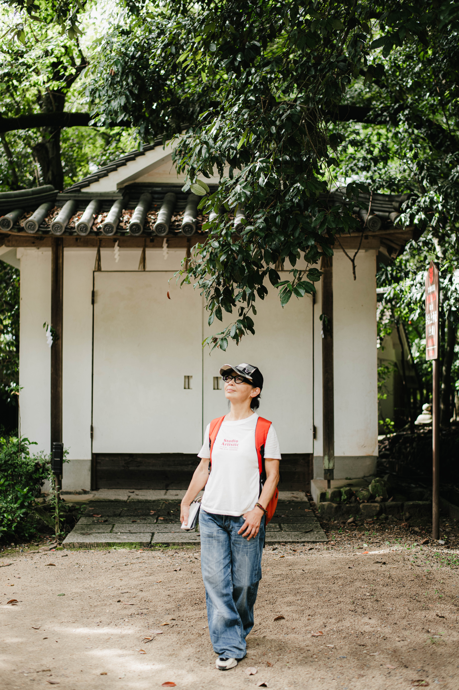
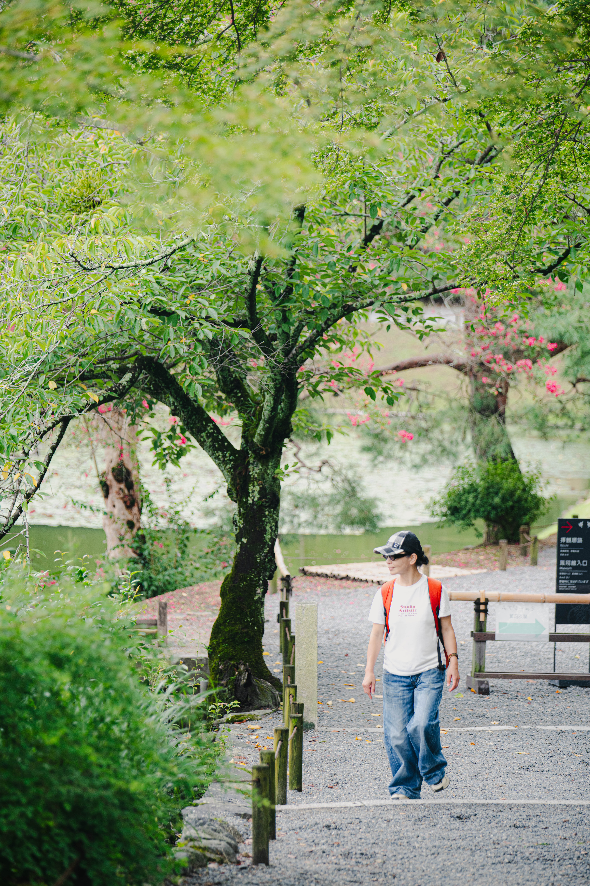
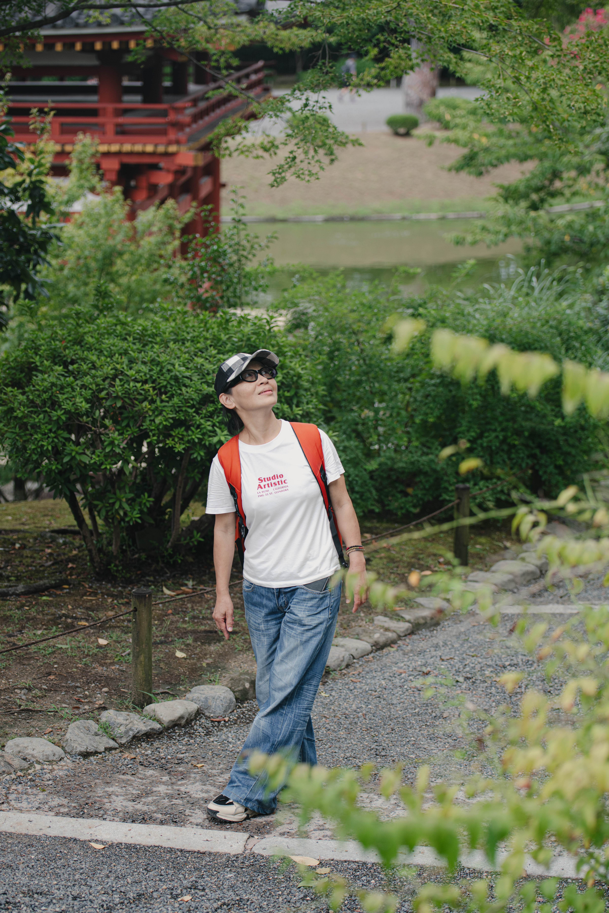

唐卡畫師 ‧ 曾雅蘭
傳承藏密繪畫筆意 ‧ 靜心筆觸與宗教藝術之美
關於曾雅蘭 (Artist Profile)
唐卡畫師曾雅蘭，專注於藏傳佛教唐卡繪畫藝術。修習唐卡藝術多年，承襲傳統藏密唐卡之嚴謹度量衡與繪製工藝。
每一幅唐卡作品均經歷研磨天然礦物顏料、勾勒流暢線條與層層鋪塗，將對佛法的敬仰與靜心能量融入筆觸之中。
繪製工藝與創作理念 (Craftsmanship)
1. 天然礦物顏料： 使用金箔、綠松石、孔雀石、朱砂等天然礦物顏料入畫，色彩經久不退，呈現莊嚴之金屬光澤與色彩層次。
2. 嚴謹度量衡規範： 嚴格遵循傳統唐卡度量衡規範，從菩薩尊容、手印至法器比例皆經過精確計算，展現圓滿莊嚴之慈悲法相。
3. 典藏級微噴藝術： 為了讓更多喜愛唐卡藝術的藏家能典藏作品，我們採用博物館級高精細微噴技術，忠實呈現原作線條與豐富細節。
生活印象 ‧ 旅途與靜心 (Impressions)
藝術源於對生命的體悟。在漫步與創作之間，汲取自然與萬物的靜謐靈感，將一份從容與定靜融入筆尖。


